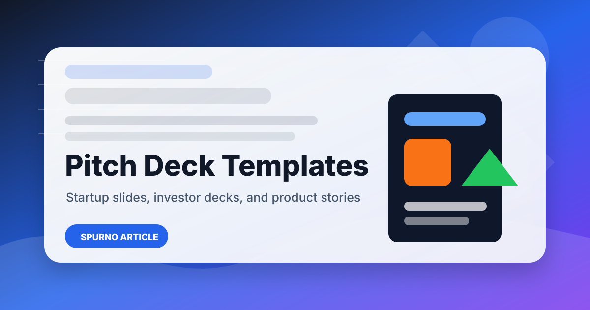

Pitch Deck Animation: Complete Guide to Presentation Design for Investors

A pitch deck is a pre-designed presentation framework specifically structured for startup fundraising and investor communications. Unlike general presentation templates, pitch deck templates are built around the specific narrative arc that investors expect — problem, solution, market, traction, team, and financial projections. Professional pitch deck templates combine strategic slide structures with polished visual design, enabling founders to focus on content while ensuring their presentation meets investor expectations. A great pitch deck can make the difference between securing funding and being overlooked. Explore our collection of background animation stock footage and motion graphics.
Why Animation Elevates Pitch Decks
Investors review hundreds of pitch decks annually, spending an average of just 2-3 minutes on initial review. In this competitive environment, visual design quality directly influences investor perception. A polished, professional pitch deck signals that the founding team pays attention to detail, understands their market, and can execute with excellence. Conversely, a poorly designed deck undermines credibility regardless of the quality of the underlying business concept.
Motion graphics and animation take pitch decks to the next level by adding dynamic data reveals, smooth transitions between slides, and engaging visual narratives that maintain investor attention throughout the presentation. Animated pitch decks combine slide-based content with cinematic motion graphics, creating a self-playing presentation that maintains viewer engagement throughout the investor narrative. SPurno Animation Studio\'s pitch deck templates incorporate professional motion design that enhances storytelling without overwhelming the core content.
Essential Slides for Investor Decks
A comprehensive pitch deck template should include these essential slides, each serving a specific purpose:
- Problem and Solution — Clearly define the problem your business solves with quantified market research, followed by a concise solution showing how your product addresses the problem uniquely
- Market Size and Opportunity — Present TAM, SAM, and SOM with credible data sources using animated charts and infographics that make market data visually compelling
- Business Model — Explain revenue streams, pricing models, customer acquisition costs, and lifetime value projections with clear unit economics
- Product Showcase — Demonstrate your product through screenshots, mockups, or demo videos highlighting key features and user experience differentiators
- Competitive Analysis — Show competitive positioning using matrices, maps, or feature comparisons that acknowledge competitors and demonstrate differentiation
- Team and Traction — Introduce the founding team with relevant experience and present traction metrics — revenue, users, partnerships — that validate momentum
- Financial Projections and Ask — Present realistic 3-5 year projections and clearly state the funding amount with specific deployment plans
Motion Design Principles for Pitch Decks
Clarity Over Creativity — Investor pitch decks prioritize clarity and communication speed above visual creativity. Each slide should communicate its core message within seconds. Use minimal text, strong visual hierarchy, and clear calls to action.
Consistent Visual Language — Maintain consistent colors, typography, spacing, and graphic styles throughout the deck. Limit your color palette to 3-4 colors that align with your brand and use no more than 2 font families.
Data Visualization — Present financial and market data through clear, honest visualizations. Use bar charts for comparisons, line charts for trends, and label data directly rather than relying on legend keys.
Storytelling Through Structure — The slide sequence should follow a narrative arc that builds tension, presents the solution, and culminates in a compelling call to action.
| Pitch Deck Slide Structure | |
| Slide 1-2 | Title / Problem Statement |
| Slide 3-4 | Solution / Value Proposition |
| Slide 5-6 | Market Size / Opportunity |
| Slide 7-8 | Business Model / Traction |
| Slide 9-10 | Competitive Landscape |
| Slide 11-12 | Team / Financial Projections |
| Slide 13 | Funding Ask / Call to Action |
After Effects Workflow for Animated Pitch Decks
- Outline your story arc — Write a narrative outline mapping the investor journey from problem awareness to funding ask
- Choose a template — Select a pitch deck template whose visual style aligns with your industry
- Use data visualization — Replace text-based statistics with animated charts that investors can process at a glance
- Keep animations subtle — Use motion sparingly with gentle reveals and smooth transitions
- Incorporate strategic motion — Use animation to reveal data sequentially and emphasize key metrics
- Review with feedback — Test your animated deck with trusted advisors before presenting to investors
Common Pitch Deck Mistakes to Avoid
- Too much text per slide — Investors scan, not read. Keep slides concise with minimal text
- Unrealistic financial projections — Overly optimistic projections destroy credibility
- Ignoring the competition — Acknowledge competitors and demonstrate clear differentiation
- Weak call to action — Every pitch deck should end with a specific ask
- Inconsistent branding — Maintain strict design consistency throughout the presentation
| Funding Stage Requirements | |
| Stage | Focus Areas |
| Pre-Seed / Seed | Team, vision, early traction, market opportunity |
| Series A | Product-market fit, growth metrics, scalable model |
| Series B+ | Unit economics, market leadership, exit strategy |
Funding Stage Considerations
Different funding stages require different pitch deck approaches. Pre-seed and seed decks focus on team, vision, and early traction, emphasizing the founder-market fit and the size of the opportunity. Series A decks emphasize product-market fit, growth metrics, and scalable business models. Later-stage decks focus on unit economics, market leadership positioning, and clear exit strategy scenarios.
Choose a pitch deck template that matches your current fundraising stage. SPurno Animation Studio offers a range of professional pitch deck templates on Adobe Stock, Shutterstock, and Pond5 featuring clean layouts, animated data visualizations, and customizable brand integration.
Pros
- Animated pitch decks stand out in competitive fundraising
- Motion graphics improve data comprehension and retention
- Professional design signals team quality to investors
- Templates save significant production time and cost
- Consistent visual language builds brand credibility
Cons
- Over-animation can distract from core messaging
- Video pitch decks cannot be easily updated like slides
- Professional templates require some customization effort
- High-quality animation production takes time and expertise
- File sizes can be large for video-based pitch decks
Verdict
Pitch deck animation is a powerful tool for startups seeking investment in an increasingly competitive fundraising landscape. When executed with strategic restraint and professional motion design, animated pitch decks capture investor attention, improve information retention, and signal the quality and attention to detail that investors look for in founding teams. SPurno Animation Studio\'s pitch deck templates offer the perfect balance of professional motion design and strategic structure.